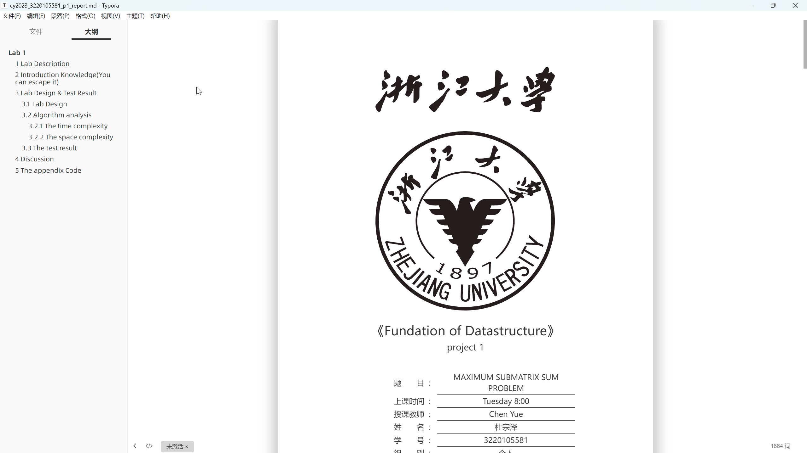

<!DOCTYPE html>
<html lang="en">
  <head>
    <meta charset="utf-8" />
    <meta name="viewport" content="width=device-width, initial-scale=1.0, maximum-scale=1.0, user-scalable=no" />

    <title>课程前瞻 - 2023fall 实用技能拾遗</title>
    <link rel="shortcut icon" href="./favicon.ico" />
    <link rel="stylesheet" href="./dist/reset.css" />
    <link rel="stylesheet" href="./dist/reveal.css" />
    <link rel="stylesheet" href="./dist/theme/simple.css" id="theme" />
    <link rel="stylesheet" href="./css/highlight/github.css" />

    <link rel="stylesheet" href="./_assets/custom.css" />

  </head>
  <body>
    <div class="reveal">
      <div class="slides"><section  data-markdown><script type="text/template">

<div class="middle center">
<div style="width: 100%">


# 「实用技能拾遗」课程前瞻

<hr/>

2023 fall 计算机学院朋辈辅学课程

By [yaoyaoling](https://github.com/Yaoyaolingbro) [Thorin](https://github.com/Thorin215)

<div style="text-align: right; margin-top: 1em;">
<p>2023.10.14&emsp;&emsp;&emsp;</p>
</div>

</div>
</div>

</script></section><section ><section data-markdown><script type="text/template">

<div class="middle center">
<div style="width: 100%">

# Part.1 关于课程

</div>
</div>

</script></section><section data-markdown><script type="text/template">

## 为什么会有这门课程？

- CSer的启蒙课[CS自学指南](https://decal.ocf.berkeley.edu/)
- "The Missing Semester of Your CS Education": [MIT 6.null](https://missing.csail.mit.edu/)
- By the way[Linux System Administration Decal](https://decal.ocf.berkeley.edu/)
- 掌握一系列常用、好用的工具（包括 Git、Vim、Shell、Markdown 等）
- 增强 CS 专业技能，让你看起来更专业、更像一个 CS 人
    - 推荐阅读：[「如何让自己看上去、闻上去都像一个 CS 人」](https://blog.hobbitqia.cc/p/5948019b.html)（[CC98 版](https://www.cc98.org/topic/5370849)）
- 培养对 CS 的兴趣
- ...

</script></section><section data-markdown><script type="text/template">

## 如何学习这门课程？

- 环境：
    - 推荐使用 Linux/macOS
    - Windows 推荐安装[WSL](https://ckc-agc.bowling233.top/programming_lecture/lecture1/pre_class/) 或虚拟机
- 牢记两个缩写：
    - RTFM: Read The F**king Manual
    - STFW: Search The F**king Web
        - 百度搜索、百度知道、百度百科、CSDN？❌
        - 必应搜索、谷歌搜索、Wikipedia、GitHub、StackOverflow！✅
- 记住，CS的经验一定都是实操得到的
- 还没有 GitHub 账号❓赶紧注册
- 不知道怎么运用魔法来上网❓

</script></section><section data-markdown><script type="text/template">

## 树立硅基生物思维

- 计算机专业的目的：了解计算机上万物运行的逻辑

> 计算机一定是对的，未经测试的代码一定是错的

- 一切结果的产生都是有原因的（没有那么多玄学问题）
- 学会自己 debug：逐层抓问题的直接原因，对逐个可能进行排查

本课程中会体现的 CS 人的“味道”：

- 折腾环境和工具，构建自己熟悉且方便快捷的工作环境与工作流程
    - 一切重复性工作都可以交给计算机自动化完成
    - 没有合适的工具？<span class="heti-skip">自己写一个.jpg</span>
- 版本控制，开源共享，共同合作
- 遇到问题可以自己 STFW RTFM RTFSC 进行 debug 分析解决

</script></section></section><section ><section data-markdown><script type="text/template">

<div class="middle center">
<div style="width: 100%">

# Part.2 关于讲师

</div>
</div>

</script></section><section data-markdown><script type="text/template">

## 关于讲师

- 周六 —— 王淳
    - 22 级图灵班
    - GitHub [Thorin](https://github.com/Thorin215)
- 周日 —— 杜宗泽
    - 22 级混合CS
    - GitHub [yaoyaoling](https://github.com/Yaoyaolingbro)
    - 笔记 [notebook](https://yaoyaolingbro.github.io/notebook/)

</script></section></section><section ><section data-markdown><script type="text/template">

<div class="middle center">
<div style="width: 100%">

# Part.3 课程安排/授课方式

</div>
</div>

</script></section><section data-markdown><script type="text/template">

## 课程安排

两个教学班：

- 周六：
    - 王淳主讲
    - 15:00~16:30
- 周日：
    - 杜宗泽主讲
    - 13:00~14:30

没报名的同学当然可以线下or智云课堂的方式来观看哦！

一共10次课程，具体时间可能会略有调整。

</script></section><section data-markdown><script type="text/template">

## 双周周六 课程安排

<div class="three-line">

|周数|日期|课程主题|
|:--:|:--:|:--:|
|第4周|10.14|Linux环境与Shell 基础|
|第5周|10.21|可执行文件背后的原理与Linux系统常用C语言开发工具|
|第6周|10.28|Git/GitHub 基础介绍|
|第7周|11.4|Markdown 语法及应用|
|第9周|11.18|LaTeX 排版简要介绍|
|第10周|11.25|一些好玩的东西！|

</div>

ps：期中考试周我们会暂停一次，后续的课程会根据授课情况安排。

</script></section><section data-markdown><script type="text/template">

## 资料
    
- 资料/回放：
    - 课程仓库：[ZJU23fall-PracticalSkills](https://github.com/Yaoyaolingbro/23fall_Practicalskill)
    - 课程 slides：[slides.tonycrane.cc/PracticalSkillsTutorial](https://yaoyaolingbro.github.io/23fall_Practicalskill/)
    - 钉钉群会同步直播
    - 我们也会将我们的随堂练习和一些小lab放到仓库中去

</script></section></section><section ><section data-markdown><script type="text/template">

<div class="middle center">
<div style="width: 100%">

# Part.4 内容前瞻

</div>
</div>

</script></section><section data-markdown><script type="text/template">

## Git - 版本控制工具

<div style="text-align: center;">

<p style="margin-top: 0.1em;">lazygit</p>
</div>

</script></section><section data-markdown><script type="text/template">

## GitHub - 全球最大的代码托管网站

<div style="text-align: center;">

</div>

</script></section><section data-markdown><script type="text/template">

## Terminal/Shell - 用命令行控制电脑

<div style="text-align: center;">

</div>

</script></section><section data-markdown><script type="text/template">

## Vim - 命令行中的文本编辑器

<div style="text-align: center; margin-top: 0.5em;">

</div>

</script></section><section data-markdown><script type="text/template">

## Markdown - 轻量级文本标记语言

<div style="text-align: center; margin-top: 0.5em;">

</div>

</script></section><section data-markdown><script type="text/template">

## LaTeX - 纯代码式文档排版软件

<div style="text-align: center;">

</div>

</script></section><section data-markdown><script type="text/template">

## GNU Make/Cmake - 自动化项目编译执行

<div style="text-align: center; margin-top: 0.5em;">

</div>


</script></section></section><section  data-markdown><script type="text/template">

<div class="middle center">
<div style="width: 100%">

# 谢谢大家

<hr/>

**Questions?**

</div>
</div></script></section></div>
    </div>

    <script src="./dist/reveal.js"></script>

    <script src="./plugin/markdown/markdown.js"></script>
    <script src="./plugin/highlight/highlight.js"></script>
    <script src="./plugin/zoom/zoom.js"></script>
    <script src="./plugin/notes/notes.js"></script>
    <script src="./plugin/math/math.js"></script>
    <script>
      function extend() {
        var target = {};
        for (var i = 0; i < arguments.length; i++) {
          var source = arguments[i];
          for (var key in source) {
            if (source.hasOwnProperty(key)) {
              target[key] = source[key];
            }
          }
        }
        return target;
      }

      // default options to init reveal.js
      var defaultOptions = {
        controls: true,
        progress: true,
        history: true,
        center: true,
        transition: 'default', // none/fade/slide/convex/concave/zoom
        slideNumber: true,
        plugins: [
          RevealMarkdown,
          RevealHighlight,
          RevealZoom,
          RevealNotes,
          RevealMath
        ]
      };

      // options from URL query string
      var queryOptions = Reveal().getQueryHash() || {};

      var options = extend(defaultOptions, {"transition":"slide","transitionSpeed":"fast","center":false,"slideNumber":"c/t","width":1000}, queryOptions);
    </script>


    <script>
      Reveal.initialize(options);
    </script>
  </body>
</html>
